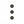

- SOCKS4
- SOCKS5
- HTTP
- HTTPS
Приложение CensorTracker Proxy не найдено на устройстве
Скачайте и запустите приложение CensorTracker Proxy. Оно будет работать в фоне и поддерживать работу локального прокси
Добавьте прокси для подключения
Рекомендуем RKS VPN в качестве локального прокси
Устойчивый к блокировкам VPN
Работает как в CensorTracker, так и в других приложениях, в том числе на телефоне и ТВ
Подробнее об RKS VPN
RKS VPN

Amnezia Premium
- Обновить
- Переименовать
- Удалить
Удалить прокси [PL] Shadowsocks - TCP?
Переименование [PL] Shadowsocks - TCP
Пример ошибки. Название не может быть пустым